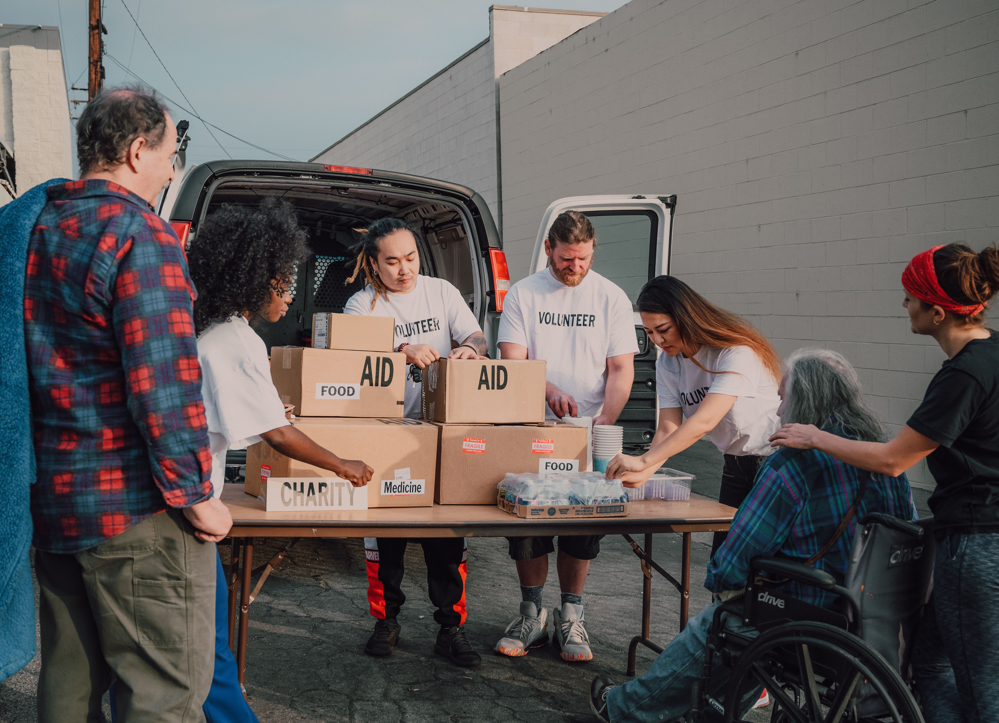

About Our Charity
Hope Beyond Crohn's is a charity created to support people living with Crohn's disease. Our goal is to help people feel supported, informed, and connected.
We provide community support, educational programs, and resources for individuals and families affected by Crohn's disease.
What We Do

Community Support
We create supportive communities where people affected by Crohn's disease can connect and encourage one another.
Education
Community education events provide information, guidance, and opportunities to connect with others.
Our Mission
Our mission is to make sure that no one affected by Crohn's disease feels like they have to face it alone.
Learn more about Crohn's disease here